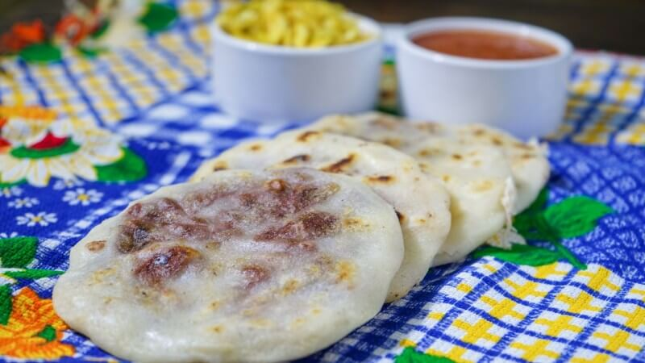
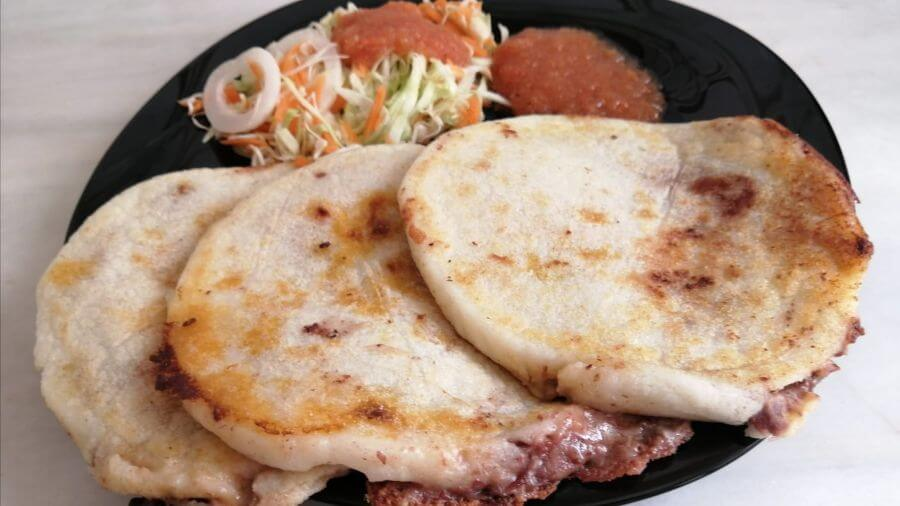
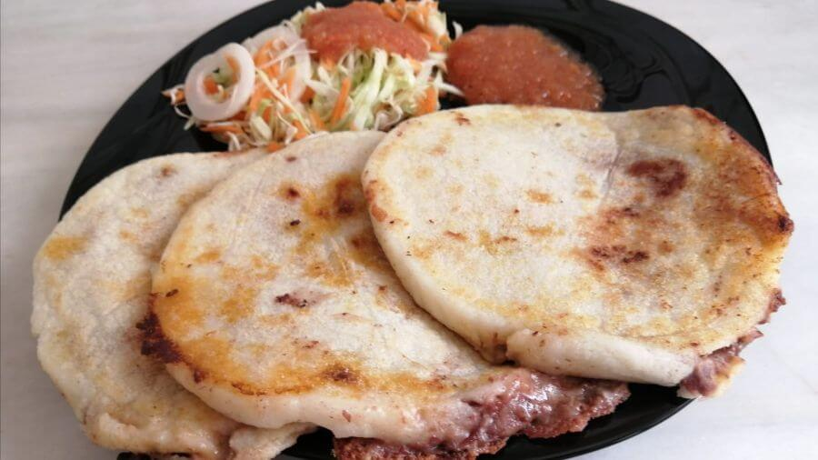
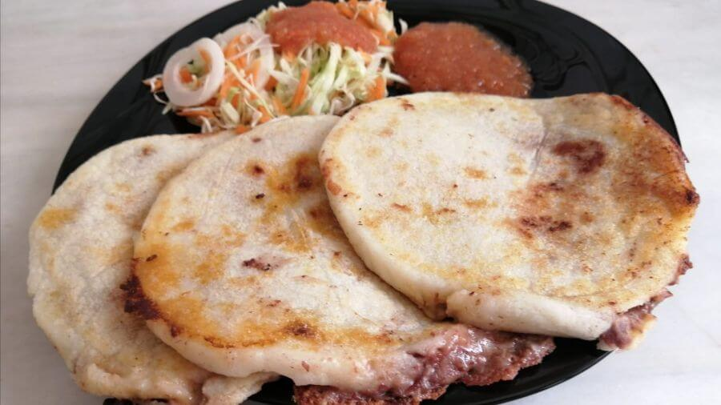

Pupusas
Las pupusas son el platillo más representativo de El Salvador y un verdadero símbolo nacional. Se trata de una tortilla gruesa de maíz (o de arroz) rellena con ingredientes variados como queso, frijoles refritos, chicharrón, ayote o loroco. Tradicionalmente, se cocinan en un comal y se sirven acompañadas de curtido (repollo fermentado con zanahoria y vinagre) y salsa de tomate. Son populares en todo el país y tienen su propio día nacional: el segundo domingo de noviembre.
Ingredientes Principales
- 4 tazas de harina de maíz.
- 2 tazas de agua tibia.
- 1 cucharadita de sal.
- 1 taza de queso rallado.
- 1 taza de frijoles refritos.
- Salsa.
- Curtido.
Preparación
- En un bol grande mezclar la harina de maíz, con el agua tibia, y la sal hasta que la masa esté suave y manejable. Dejar reposar unos minutos 15/20 minutos, tapada con un paño.
- Una vez que la masa reposo, fomar unas bolitas del tamaño de una pelota de golf. Humedecer las manos o poneles un poco de aceite para el armado.
- Para rellenarlas hacer un agujero con los dedos en cada bolita de masa,hasta que sea lo suficiente grande como para agregar el relleno.
- Agregar aproximadamente una cucharada de queso rallado o frijoles refritos al agujero de la masa. Cerrar el agujero con cuidado y volver a formar la bola de masa hasta darle la forma de una tortilla.
- Cocinar las pupusas en un comal o sartén caliente durante 2-3 minutos de cada lado.
- Sevir caliente con salsa y curtido, o con el acompañamiento elegido.
Imágenes

 

